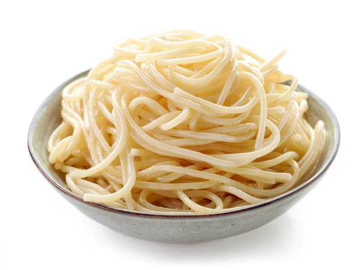

Plain Spaghetti

Spaghettini noodles tossed with garlic and butter. Perfect for most Italian dishes where the main course deserves all the attention!
Ingredients
- 16 ounces spaghettini
- ¾ cup butter, divided
- 2 cloves garlic, minced
- ground black pepper to taste
Steps
- Bring a large pot of lightly salted water to a boil. Add pasta and cook for 8 to 10 minutes or until al dente; drain.
- Melt 1/4 cup of the butter in skillet over medium heat. Add garlic and saute for 2 to 3 minutes; remove from heat. Melt the remaining butter in the skillet with the garlic. In a bowl, combine butter with noodles; mix well. Add pepper if you would like.